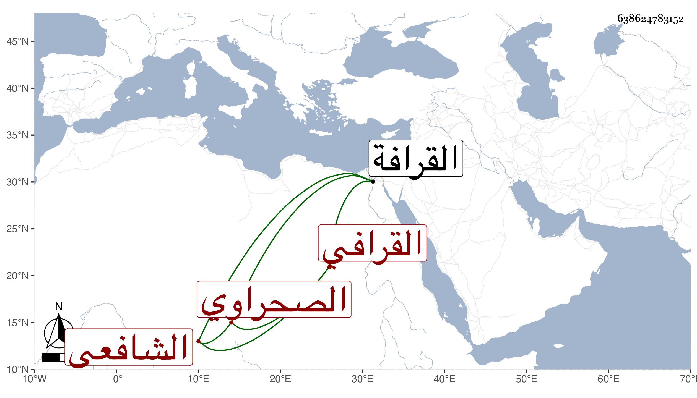

0902Sakhawi.DawLamic.ITO20230111-ara1.EIS1600.638624783152
Biography ID: 638624783152
216
محمد بن أحمد بن محمد الشمس بن الشهاب القرافي الصحراوي الشافعي أمام تربة الظاهر برقوق . ولد سنة ثلاث وتسعين وسبعمائة بالقرافة وحفظ القرآن وتلا به لأبي عمرو على شيخنا الزين رضوان وحضر مجلس الشرف يعقوب الجوشني في القراءات ، واشتغل في الفقه عند البرهان بن حجاج الأبناسي والشمس بن عبد الرحيم بن اللبان المنهاجي وسمع على الجمال الحنبلي وأجازت له عائشة ابنة ابن عبد الهادي في آخرين . وحج مرتين الأولى في سنة إحدى عشرة ولقيه البقاعي . مات في .
